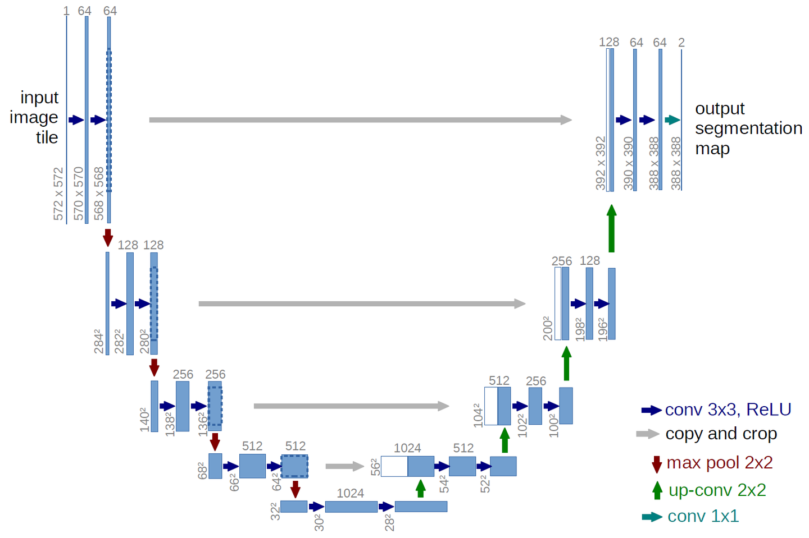

Unet
U-Net是一种基于卷积神经网络的图像分割模型，由Olaf Ronneberger、Philipp Fischer和Thomas Brox在2015年提出。 U-Net采用编码-解码结构，通过卷积和上采样操作来实现像素级别的图像分割，适用于医学图像分割、自然图像分割等任务。
创新点
采用编码-解码结构
网络介绍
在FCN中得到一个结论，融合多种尺度的特征可以显著提升分割的效果。因此Unet将这一结论发扬光大，让网络每一层的特征都与反卷积得到的相同尺度的特征融合，得到最终输出。
网络的结构如下，呈现一个大大的U型，因此被称为UNet。

我们如果将网络对称的分为左右两半，则称左半边为编码器，他用来提取网络高层次特征，同时特征图尺寸会越来越小。 右半边称为解码器，用来将特征恢复为输入的尺寸，这个过程中会逐渐增加细节信息。同时中间的4个灰色箭头表示将编码结构中提取的特征短连接到解码器中，并与解码得到的对应尺寸的特征图concat。 下面将详细介绍这几个部分：
1、编码器 编码器采用了类似于VGG的结构，通过卷积和池化操作来逐渐减小特征图的大小，从而提取出图像的高层次特征。
2、解码器 解码器采用了如下的结构：
a. 上采样层：上采样层采用反卷积或双线性插值等方法来将特征图的大小还原到原始图像大小。
b. 跳跃连接：跳跃连接将编码器和解码器之间的特征图进行连接，从而可以传递低层次的特征信息，帮助解决图像分割中的细节和语义信息的问题。
c. 卷积层：卷积层用于提取更高层次的特征信息，并进行像素级别的预测。
这里要重点说一下Unet采用拼接（concat），而非FCN中的元素对应相加。得到有多种信息的特征图，然后在采用卷积提取有用信息。 这样的好处是不用局限网络的特征图通道数，且可以让网络自主学习有效特征。
评价
U-Net在医学图像分割、自然图像分割等领域都取得了很好的效果，是图像分割领域的一个经典模型。
U-Net的优点包括：
- 可以对任意大小的输入图像进行像素级别的分割，适用于不同尺度和分辨率的图像。
- 采用了编码-解码结构和跳跃连接等技术，可以提取图像的高层次特征，同时保留低层次的细节信息。
- 可以适应不同的图像分割任务，如医学图像分割、自然图像分割等。
- 可以实现端到端的训练和预测，减少了模型设计和调试的难度。
U-Net的缺点包括：
- U-Net的训练需要大量的计算资源和训练数据，训练时间较长，需要进行适当的正则化和优化。
- U-Net在处理复杂的图像分割任务时，可能会出现过拟合或欠拟合的情况，需要进行适当的调整和优化。